Ascension - Pegassi
Captures desktop

Pages internes
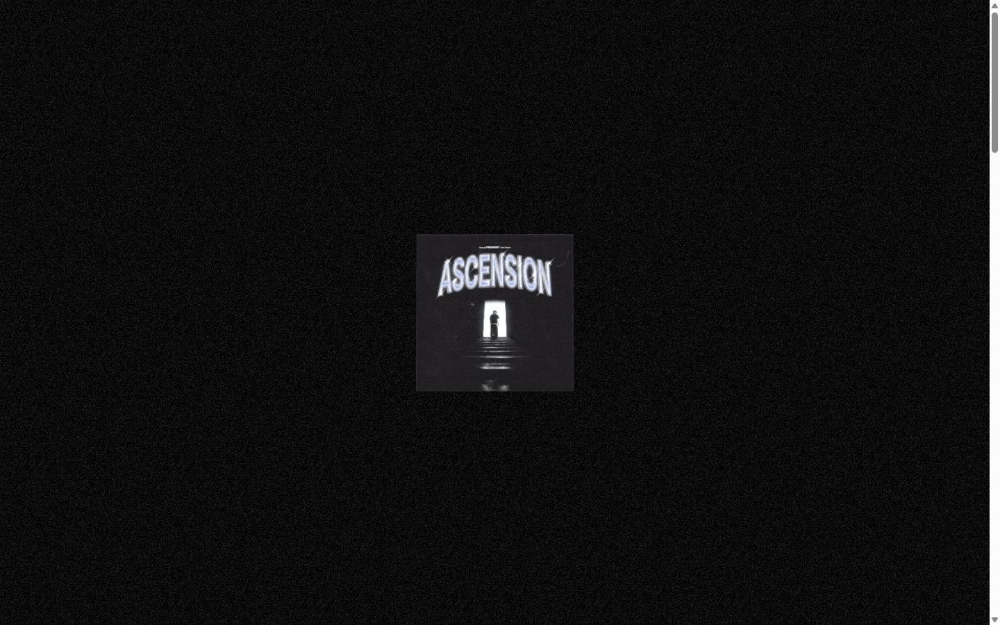
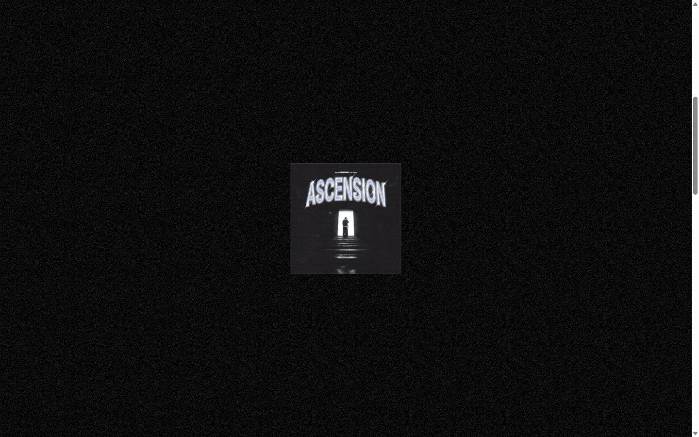
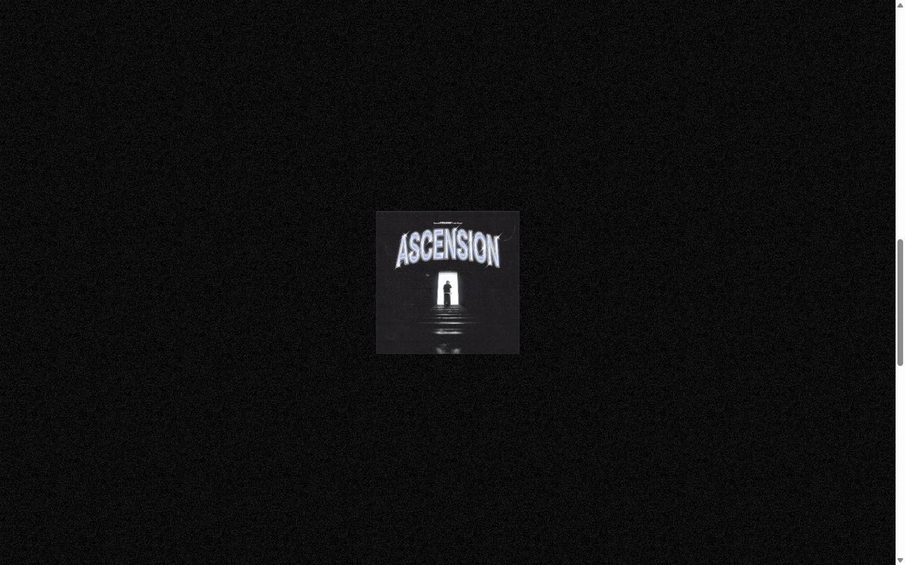
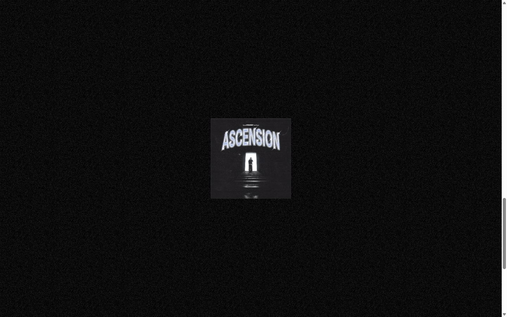
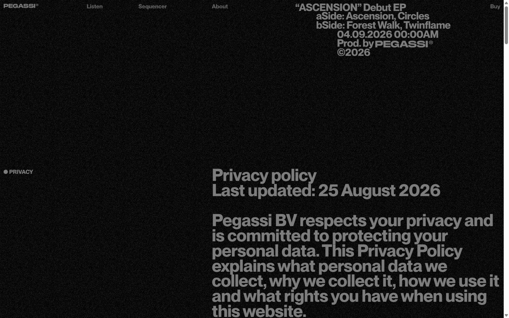
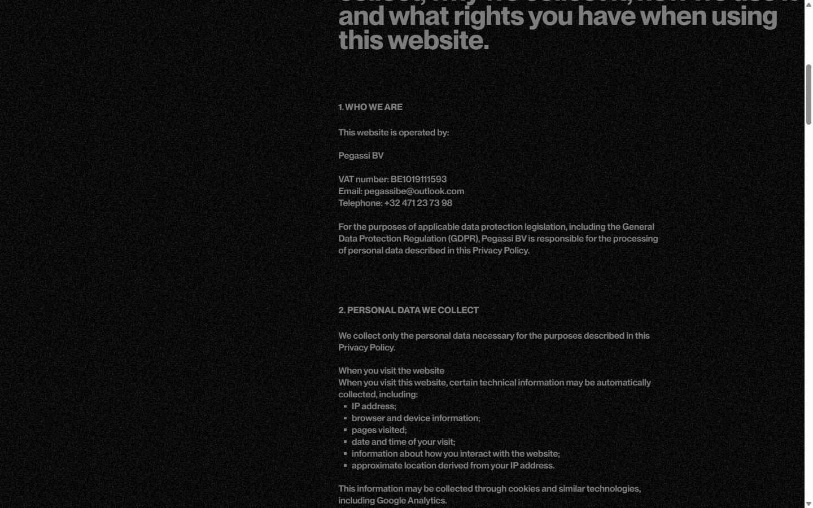
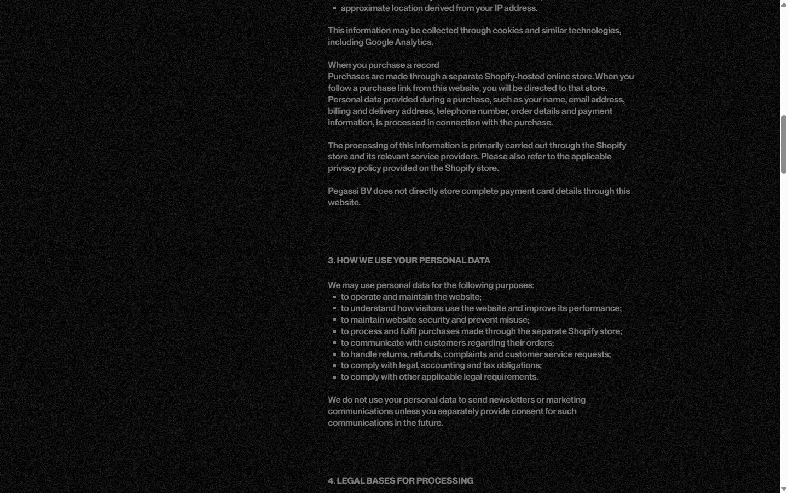
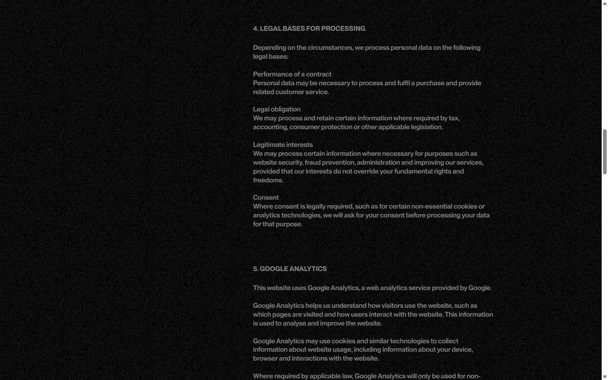
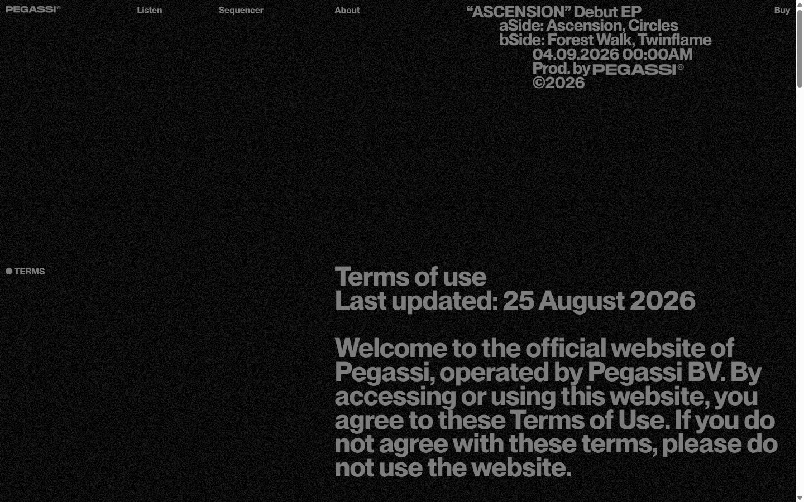
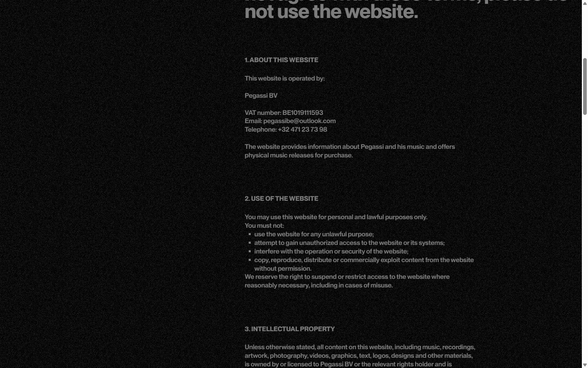
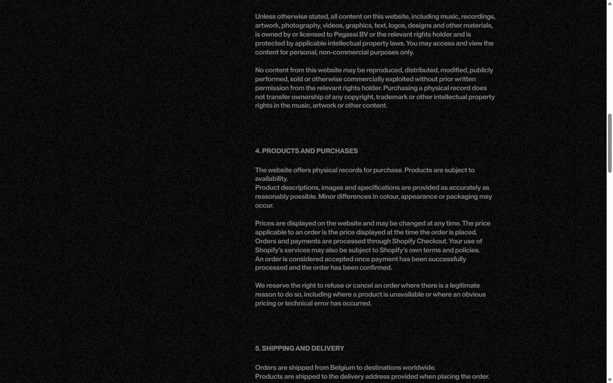
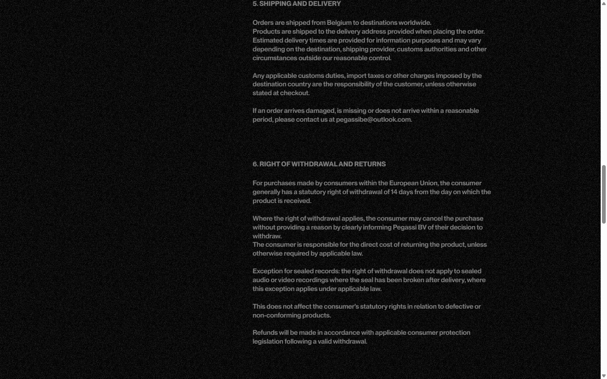
Mobile


Stack détectée
GSAP, Lenis, Nuxt, ScrollTrigger, SplitText/SplitType, Three.js, Virtual scroll, Vue, WebGL
Versions : GSAP 3.11.0 · Three.js r?
Shaders GLSL personnalisés extraits : 18 (voir shaders.glsl)
Design tokens
Couleurs (fonds, pondérées par surface)
#000000
Couleurs de texte
#7d7d7d
Polices utilisées (par volume de texte)
sans
Fichiers de police chargés
Typographie
| Élément | Police | Taille | Graisse | Interligne | Interlettrage | Casse |
|---|---|---|---|---|---|---|
| h1 | sans, sans-serif | 16.15px | 700 | 25.65px | -0.1615px | none |
| p | sans, sans-serif | 16.15px | 700 | 25.65px | -0.1615px | none |
| a | sans, sans-serif | 16.15px | 700 | 25.65px | -0.1615px | none |
| button | sans, sans-serif | 16.15px | 600 | 20.9px | -0.1615px | none |
| body | sans, sans-serif | 16.15px | 700 | 25.65px | -0.1615px | none |
Échelle des tailles de texte
16.15px (70) · 47.5px (37) · 12.35px (16) · 28.5px (6)
Arrondis
4.75px
Transitions CSS fréquentes
Points de rupture (media queries)
650px · 1100px · 1300px · 1400px · 48rem · 64rem · 80rem · 96rem
Animations CSS (@keyframes)
platter-2506e3db
Variables CSS (:root)
--font-sans: "sans", sans-serif; --font-mono: "mono", monospace; --color-black: #000; --color-white: #fff; --spacing: .1rem; --font-weight-bold: 700; --ease-out: cubic-bezier(0, 0, .2, 1); --blur-sm: 8px; --default-transition-duration: .15s; --default-transition-timing-function: cubic-bezier(.4, 0, .2, 1); --default-font-family: var(--font-sans); --default-mono-font-family: var(--font-mono); --breakpoint-s: 650px; --color-ink: #7d7d7d; --color-ink-dim: #232323; --color-surface: #121314; --color-surface-2: #1d1f21; --color-line: #313233; --color-rule: #272727; --color-chalk: #d9d9d9; --color-hairline: #ffffff1a; --color-wash: #ffffff08; --color-chip: #ffffff80; --color-scrim: #000000f2; --color-green: #96ff1e; --color-blue: #3b9aff; --color-green-glow: #96ff1ea6; --ease-out-quad: cubic-bezier(.25, .46, .45, .94); --ease-out-quart: cubic-bezier(.165, .84, .44, 1); --ease-reveal: linear(0, .0031, .0148, .0428, .109, .2893, .5995, .7782, .8706, .9091, .9306, .947, .9592, .9688, .9761, .982, .9867, .9903, .9932, .9955, ; --ease-flip: linear(0, .0101, .0374, .0781, .1289, .1869, .2496, .3149, .381, .4465, .5102, .5713, .629, .683, .7328, .7782, .8193, .8561, .8887, .9172, ; --ease-snappy: linear(0, .0191, .062, .1566, .3378, .5335, .6892, .8, .8686, .912, .9469, .964, .9741, .981, .9859, .9896, .9923, .9946, .9961, .9976, .998; --size: 1500; --bar-gap: .6rem; --menu-button: 7.5rem; --menu-slot: calc(var(--menu-button) + var(--bar-gap));
Structure de la home
Hauteur : 5398 px — 439 nœuds DOM — canvas 1, vidéos 3, images 6
| # | Bloc | Hauteur | Titre | Médias |
|---|---|---|---|---|
| 1 | section .hero relative min-h-svh overflow-x-clip | 1371 | Pegassi — Ascension EP | 3 |
| 2 | div .relative overflow-hidden | 2277 | 2 | |
| 3 | section .border-t border-rule | 352 | 0 | |
| 4 | section .site-max site-grid mt-125 s:mt-260 | 716 | 2 |
Navigation : Listen · Sequencer · About · Buy
Boutons / CTA :
SEO
Plan des titres
Performance (mesure locale, Chrome headless, connexion non bridée)
Mobile
Fichiers
captures/ : arrivée, scroll desktop (1440×900), pleine page, pages internes, mobile (390×844 @2x) ; vidéo de scroll dans la release GitHub « videos » (lien en haut de fiche)page.html : DOM rendu · styles.css : CSS chargé · scripts/ : JS chargé (index dans _index.json) · shaders.glsl : shaders extraits · rea-bundle.json : analyse REA du bundle (chunks, routes, endpoints)